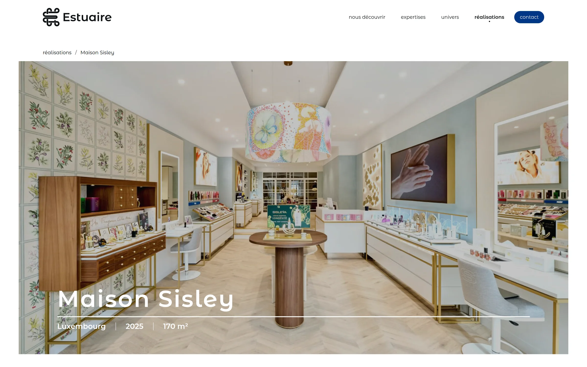
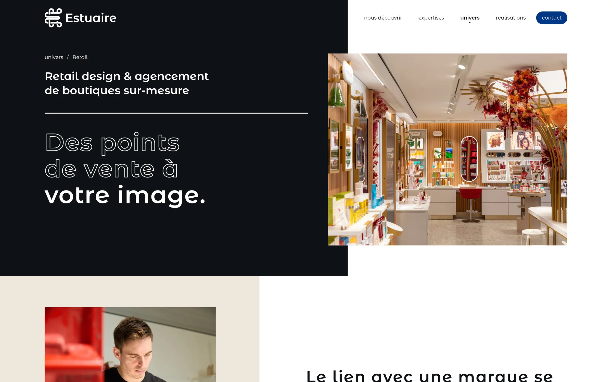
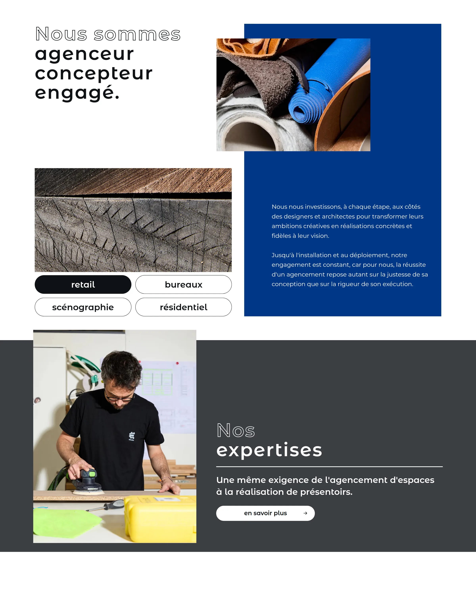
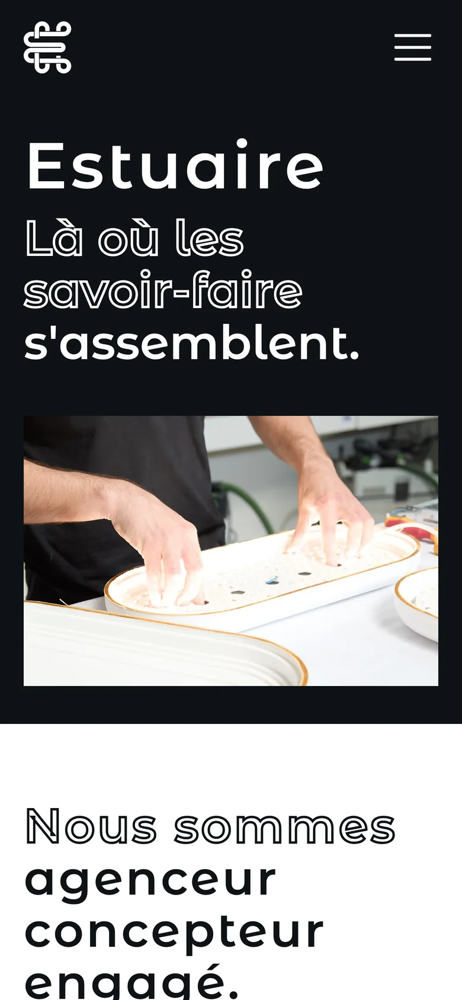
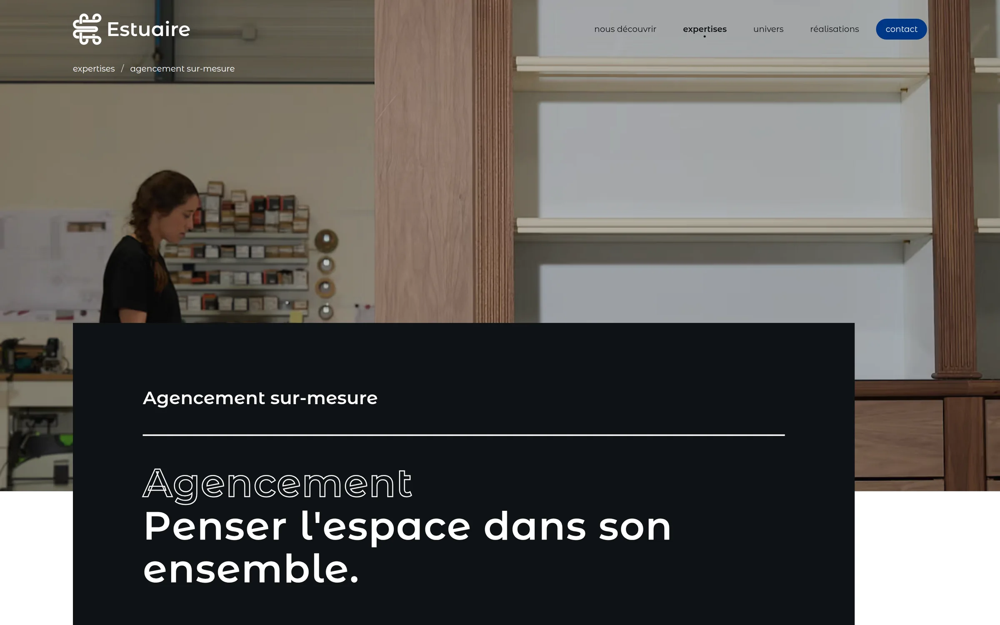
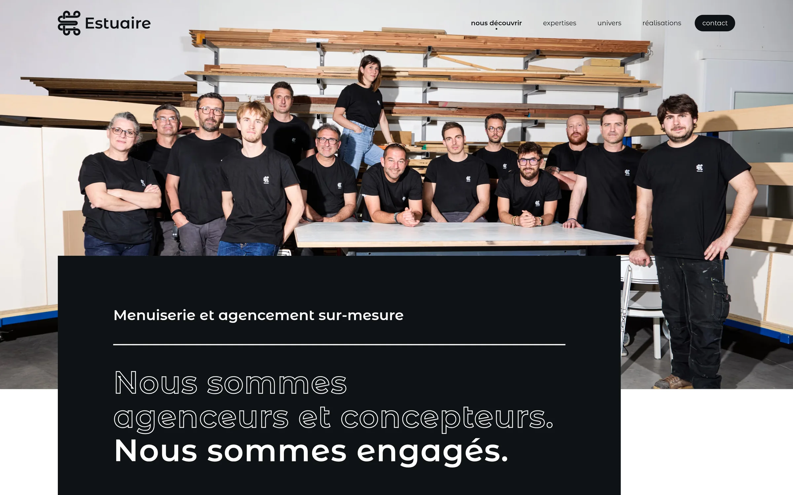

Work / Estuaire
Estuaire
Showcase website for Estuaire, a French maker of custom fittings, furniture and displays for shops, offices, exhibitions and homes.
- Client
- Estuaire
- Type
- Showcase website
- Role
- Development
- Year
- 2026
- Stack
- Next.js, Sanity, Cloudflare
- Live
- estuaire.fr

The site
Estuaire designs and builds its fittings in its own workshop. The site shows that work through the projects themselves.
- Three ways in: what Estuaire does (fittings, furniture, displays), where it works (retail, offices, scenography, residential) and what it has made.
- A case study per project, led by full-width photography and its place and year.
- Every page is prerendered by Next.js and served through Cloudflare.







